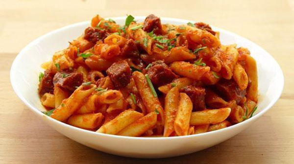
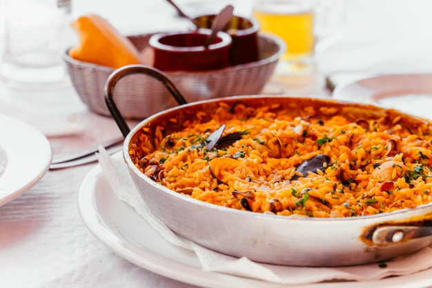
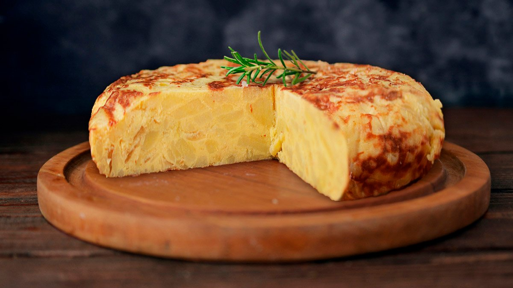
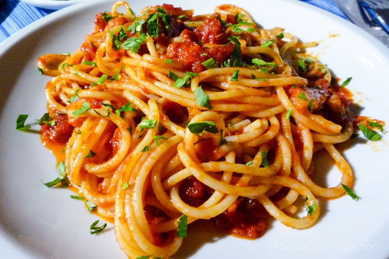

| Imagen |
Título |
Descripción |
Alérgenos |
Precio |
Visualizar |
 |
Hamburguesa |
Comida que se prepara con carne picada de animales vacunos, cerdo o aves, generalmente condimentada con
sal, pimienta, ajo y perejil, y forma redonda y plana; suele asarse a la plancha o freírse. |
|
9.00€ |
|
|  |
Macarrones |
El macarrón (en italiano maccheroni) es un tipo de pasta italiana elaborado con agua, harina de
trigo y, a veces, huevo, que suele tener forma de tubo alargado, conocidos como plumas. |
- Gluten
- Trazas de huevo
- Queso
|
7.50€ |
|
 |
Lasaña |
Plato que se prepara con láminas de pasta italiana de unos 10 centímetros de ancho que se
alternan con capas de picadillo variado; generalmente se recubre la última capa de pasta con
salsa blanca o de tomate, se espolvorea con queso rallado y se gratina. |
- Gluten
- Trazas de huevo
- Queso
|
9.70€ |
|
| Imagen |
Título |
Descripción |
Alérgenos |
Precio |
Visualizar |
|  |
Paella |
Plato cuyo ingrediente principal es el arroz que se cocina con otros ingredientes como pescado, marisco,
ave, carne, verduras, legumbres, etc; es un plato típico de todas las regiones españolas,
sobre todo de Valencia, variando en cada una el tipo y cantidad de ingredientes. |
- Lactosa
- Gluten
- Pescado y moluscos
- Huevo
|
9.70€ |
|
|  |
Tortilla |
Alimento de forma circular y plano que se hace con una masa de harina de maíz o trigo prensada, o
hecha a mano, que se cocina al fuego y se come sola o rellena con diversos ingredientes; constituye un
elemento esencial en la alimentación de diversos países de América, especialmente en
América Central y México. |
- Gluten
- Trazas de huevo
- Queso
|
12.00€ |
|
|  |
Spaghetti |
Pasta alimenticia de harina en forma de cilindros macizos, largos y delgados, más gruesos que los
fideos. |
- Gluten
- Trazas de huevo
- Queso
|
8.20€ |
|